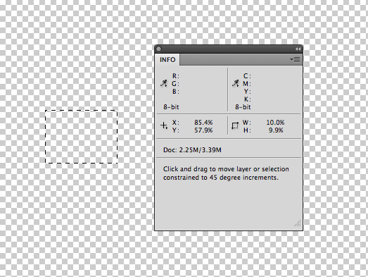

Unfortunately there is no easy way to overcome the need for relative measurement. Even if you could you would still need it for responsive design. The only option is to Embrace it.
Relative measurement is accomplished in CSS through percentages and EMs. Size percentages are always relative to their parent object. Let's say for instance that you have a box on the page that contains another box. The mark up would look like this:
<div style="width:500px; background:red;">
<div style="width:50%; background:#ccc;">
some stuff
</div>
</div>
Which produces:
Here the grey box is 50% of the larger, 500px box. You can even go a level deeper.
<div style="width:500px; background:red;">
<div style="width:50%; background:#ccc;">
<div style="width:50%; background:#666;">
some stuff
</div>
</div>
</div>
In this the dark grey box is half the light grey box which is half the red box.
This is how relative units work. To see percentages in Photoshop, it's simply a matter of adjusting youre project settings.
With this you can marquee a selection and your information panel will show the percentage instead of the pixels

It's important to know that the layers percentage is only in context of the document.
just like these boxes, typography works similiarly
Typography and EMs